Bosses
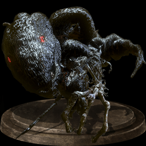
Iundex Gundry
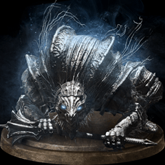
Vordt of the Boreal Valley
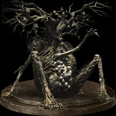
Curse-Rooted Greatwood
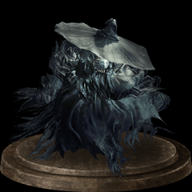
Crystal Sage
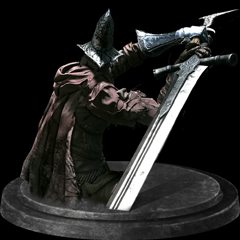
Abyss Watchers
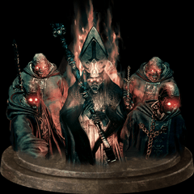
Deacons of the Deep
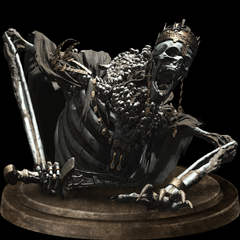
High Lord Wolnir
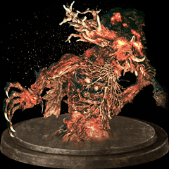
Old Deamon King
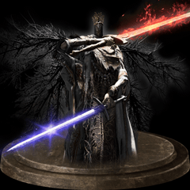
Pontiff Sulyvahn
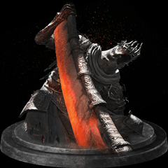
Yhorm the Giant
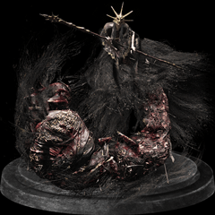
Aldritch, Devourer of Gods
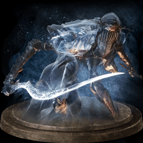
Dancer of the Boreal Valley
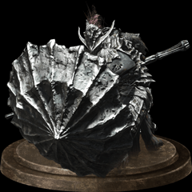
Dragonslayer Armour
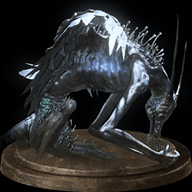
Oceiros, the Consumed King
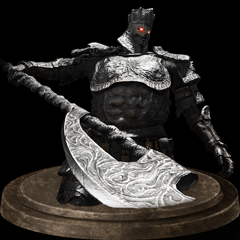
Champion Gundry
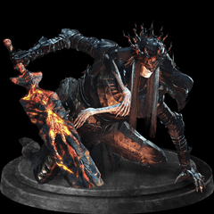
Lothric, Younger Prince
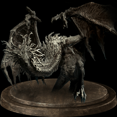
Ancient Wyvern
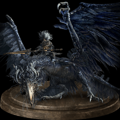
Nameless King